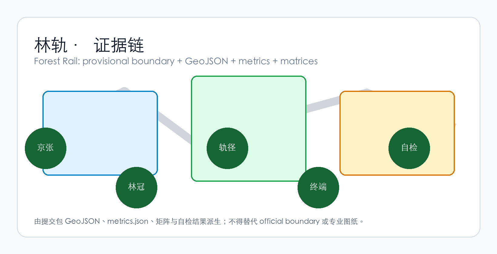
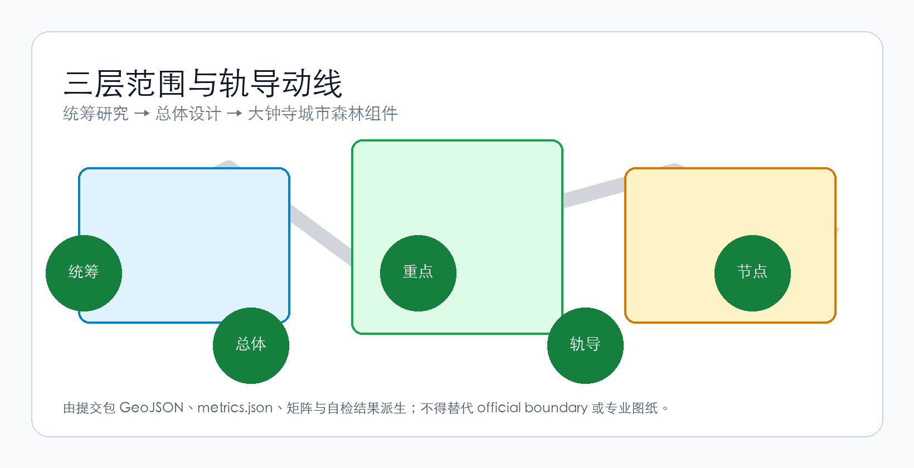
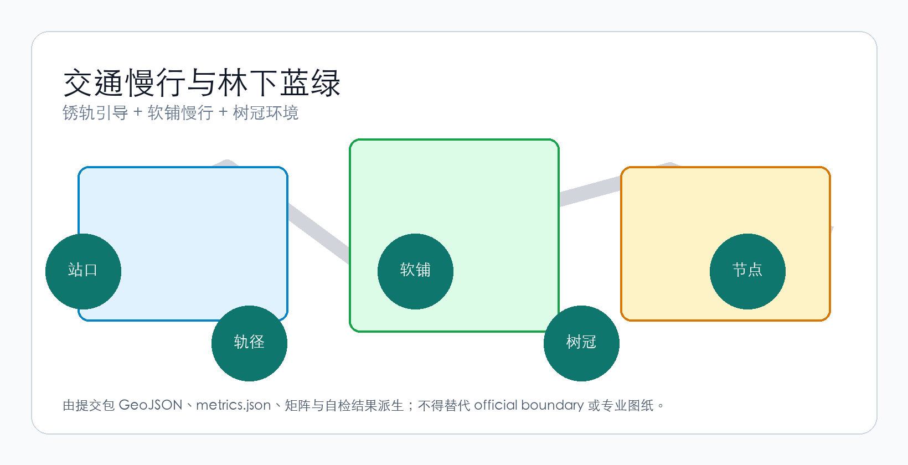
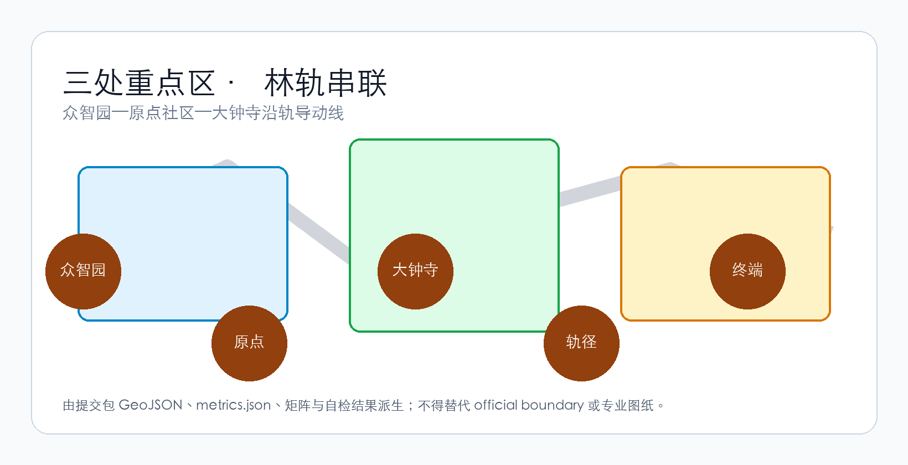
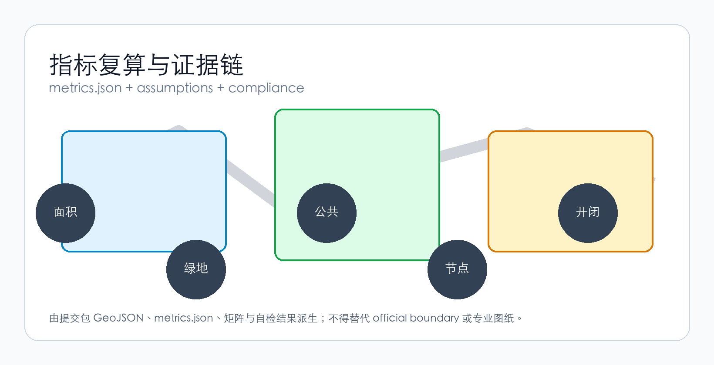

Forest Rail
An urban forest corridor along the Jingzhang heritage railway in the Dazhongsi district: rusted rails as wayfinding, tree canopy over buildings, AI-managed node access and conceptual short-haul transit. Not a tech showcase — a place to walk, sit, and work quietly under trees.
Forest Rail
Dazhongsi is not a tech showcase. It is an urban forest where AI makes its nest — buildings under trees, people among woods, rusted rails threading through the canopy. Look out the window and see nature.
This proposal is called Forest Rail. Each word carries a distinct responsibility:
- Forest: Plant enough large-canopy trees in the Dazhongsi district so that building rooftops sit below the tree canopy. From inside, you look out and see trunks and leaves, not the glass curtain wall across the street.
- Rail: Continue the narrative of the Jingzhang Railway heritage corridor by retaining or re-laying rail tracks as ground-level wayfinding lines. The rails rust. People walk on timber boardwalks and crushed stone paths between them. Between key nodes, low-speed short-haul transit is retained as a concept.
Together, these form a single corridor running through a forest. Outside this corridor, the existing street network remains unchanged.
Design Basis and Source List
This proposal follows the Pre-qualification Announcement for the Centennial Jingzhang AI Innovation Belt Urban Design International Open Call 来源, with machine-readable references from brief/site-package/ 来源.
Current spatial data uses provisional boundaries (geometry/site_boundary.geojson, geometry/key_areas.geojson), labeled provisional_constraint, official_boundary=false. All metrics and drawings must be recalculated when official boundaries are released. This limitation does not block content scoring, but spatial conclusions in this text are for design discussion only.
The source registry (data/source_registry.json) lists 7 formal sources, 1 background source, and 1 provisional-only source. Background and provisional sources are not elevated to statutory authority 来源.

Three-Level Scope Framework
The proposal follows the three tiers specified in the announcement:
| Tier | Area | What Forest Rail does here |
|---|---|---|
| Strategic research (43.6 km²) | AI industry ecosystem and urban morphology | Confirms the Jingzhang corridor as the organizing spine; explores northward extension from Dazhongsi |
| Overall design (11.4 km²) | Urban renewal framework around heritage park | Rail-guided corridor connects three key areas; tree canopy as character control; soft paving replaces hardscape |
| Key area design (368.4 ha) | Three detailed design zones | Dazhongsi implements the full urban forest component set: canopy layer, rail path, soft paving, under-canopy workspace, rust |
The three tiers are not independent deliverables. Strategic research determines the corridor's logic, overall design translates it into land use and road layers, and key area design verifies whether the components fit on actual parcels.

Coordinated Research Area: Industry and Future City Research
The Jingzhang Railway is the narrative already embedded in this territory. It opened in 1909 and went underground in 2019, leaving the surface alignment as a heritage park. The announcement requires integrating centennial Jingzhang culture, Zhongguancun innovation culture, and AI innovation culture 来源.
Forest Rail's answer: do not invent a new narrative. Use the rails themselves. The tracks remain on the ground, rusting, with grass growing between them. People walk along them. This line connects three key areas — Zhongzhiyuan at the north end near Qinghe River, AI Origin Community in the middle near universities, and Dazhongsi at the south end near the metro station. The rail-guided corridor is the spatial spine, not decoration.
AI industry ecosystem spatial framework:
- University sourcing: AI research from Tsinghua, Peking, Beihang flows southward along the heritage corridor
- Open-source collaboration: Origin Community provides code contribution display and collaboration spaces
- Enterprise translation: Dazhongsi hosts AI agent, smart terminal, and data element companies
- Public services: AI service nodes along the rail path (medical triage, legal consultation, educational aid)
- International outreach: Walkable international exchange events organized along the rail path
Naming and identity: "Forest Rail" is both the proposal name and the spatial description. No logo needed — the rail track is the identifier. The visual identity uses rust and canopy green. No additional symbols.
Overall Design: Rail-Guided Corridor and Urban Renewal
Corridor Structure
The rail-guided corridor follows the Jingzhang heritage park alignment, with the Dazhongsi section as its southern gateway. The corridor is not a newly drawn boundary — it reuses the existing railway alignment.
Zhongzhiyuan (N) ──rail── AI Origin Community (M) ──rail── Dazhongsi (S)
│ │
Qinghe interface Campus-district walking linkTracks along the corridor serve two purposes 来源:
| Purpose | Material | Function | Boundary |
|---|---|---|---|
| Wayfinding | Rusted/replica rails + soft paving | Direction for eyes and feet: walk on timber or crushed stone, follow the rusted rail | Walkable, sittable, slow; no light strips; signage minimal (Mode A) |
| Transit (concept) | Operable rail segments | Low-speed short-haul between nodes (goods, materials) | Separated from walking; not described as commercially mature; subject to professional feasibility study |
Segments are mixed: some stretches are wayfinding-only with rusted rails; others conceptually retain short-haul capacity; pedestrians have priority at crossings.
Land Use, Building Scale, and Retain-Renovate-Demolish Strategy
Renewal within the overall design scope falls into three categories:
- Retain: Existing quality buildings along the heritage corridor — unchanged
- Renovate: Buildings needing ground-floor program and facade adjustment — remove LED screens, increase under-canopy transparency
- Renew: New construction on identified low-efficiency sites — building height controlled below tree canopy
Land use classification follows national standards 标准, covering the design boundary without overlap 空间数据. Building footprints and retain/renovate/renew classification are recorded in 空间数据.
Where FAR, building height, or road setbacks lack official data, they are marked as unknown. No numbers are fabricated.
Transport, Rail, Municipal Infrastructure, and Public Services
Transport responds to the announcement's requirements for rail station integration, road micro-circulation, walking network gaps, and green transport 深度.
Key interventions:
1. Dazhongsi Station four-quadrant pedestrian connection: Metro Line 13 Dazhongsi Station — establish walking connections across all four quadrants of the intersection, with rail paths extending from station exits into the district 2. North Fifth Ring crossing node: Pedestrian linkage where the heritage corridor crosses the North Fifth Ring Road (underpass or overhead facility) to maintain north-south continuity 3. Rail path / municipal road intersections: Pedestrians have priority at crossings; rail tracks embedded in road surface indicate direction; no traffic signals govern the rail path
Road and walking network layers remain within the submission boundary 空间数据, cross-checked with public space and green space. With a provisional boundary, transport conclusions serve as design discussion only.

Municipal infrastructure covers edge-computing nodes, distributed energy, and traditional utility integration. Missing utility, energy, and drainage data are listed as prerequisites for detailed design, not fabricated.
Blue-Green Network, Public Space, and Urban Character
Blue-green space follows the Jingzhang heritage corridor as its spine, coordinating Qinghe River, Xiaoyue River, and surrounding community movement 深度.
The tree canopy layer is the primary character control mechanism: native trees with crown spread ≥8m (Chinese Scholar Tree, ash, ginkgo, goldenrain tree), targeting ≥70% coverage of building rooftops. Trees are not pruned into geometric shapes. Building height below the canopy — this is the basic criterion for the urban forest.
Character principles:
- Building facades use materials that age: brick, concrete, wood. No smooth glass curtain walls
- Rust and grey-green are the base colors, derived from oxidized rail and tree canopy
- Rooftops are for greening or equipment, not sculptural form
- Public art accepts only site-history-related, aging-compatible works — iron, stone, wood. No stainless steel or lighting installations
Which elements are design recommendations versus those pending official confirmation is itemized in standard_matrix.json.
Key Area Detailed Design
Zhongzhiyuan AI Autonomous Innovation Accelerator
Location: Northern end, along Qinghe River 空间数据.
Position: Garden-type full-stack autonomous innovation district. The Qinghe interface is its public living room — combining green space, stormwater management, walking and cycling, and AI safety testing display.
Spatial actions:
- Qinghe interface: Set back buildings, create under-canopy walkways and waterfront grass slopes
- Industry display: Standards development, safety evaluation, model red-team testing translated into visitable collaboration nodes — by appointment, not as open attractions
- External transport: Strengthen walking connections to areas north of the Fifth Ring
- Low-carbon energy: Distributed PV combined with edge computing, as an infrastructure prototype for further development
Beijing AI Origin Community
Location: Middle section, near Tsinghua, Beihang and other universities 空间数据.
Position: University-adjacent technology transfer and talent community.
Spatial actions:
- Campus-park-district walking integration: Break through walls and gaps, connect campus gates to park entrances via rail paths
- Launch space: Open-source release hall, public code wall (physical screen displaying real-time open-source contributions), small presentations
- Talent services: Housing, dining, sports embedded in the streetscape, not concentrated in a "talent apartment complex"
- Open-source collaboration: 24-hour open collaboration spaces, divided into quiet zones and discussion zones by usage intensity
Dazhongsi AI Industry Cluster — Urban Forest
Location: Southern end, adjacent to Metro Line 13 Dazhongsi Station 空间数据.
Position: Urban intelligent economy district, and the most complete implementation of the Forest Rail concept.
The design here is built from five spatial components:
| Component | How it is used in Dazhongsi | What is not allowed |
|---|---|---|
| Canopy layer | Chinese Scholar Tree and ash as primary species, crown spread ≥8m, covering existing building roofs and new low-rise structures | No geometric pruning; no ornamental small trees as substitutes |
| Rail path | Rusted rails embedded in the ground from Dazhongsi Station exits guide people into the district | No elevated landscape bridges; no polishing; no painting; no light strips |
| Soft paving | Between-rail walkways use timber boardwalk, permeable brick, or crushed stone; comfortable underfoot | No large-area asphalt; no polished stone (slippery in rain) |
| Under-canopy workspace | Building ground floors / podiums shaded by tree canopy, with tree trunks visible from windows | No glass curtain walls; no LED exterior facades |
| Rust | Rail tracks and steel elements maintain natural oxidation as time markers | No Cor-Ten imitation rust panels; no artificial aging with clear coat |
Dazhongsi Station integration: From each of the station's A/B/C/D exits, a rail path extends into one quadrant of the district. Exit the metro and enter the forest — trees are planted above station entrances so that the first thing you see emerging from underground is canopy.
Commercial services: Distributed along the rail path, not concentrated in a commercial complex. AI agent and smart terminal company showrooms on ground floors, open toward the rail path, no separate entrances needed. Data element and digital asset services operate under compliance, authorization, and auditability.
Planned green space integration: Planned green space is combined with the rail path corridor — green space is not ornamental lawn but woodland that people can walk into and sit down in.

All three key areas appear in geometry/key_areas.geojson. Current data is provisional constraint; the proposal, HTML, and self_check state that it cannot serve as approval or scoring basis.
A Day Here: Personas and Scenarios
Five User Personas
| Persona | Who | What they do on Forest Rail | Data boundary |
|---|---|---|---|
| Walking commuter programmer | AI engineer living nearby, walks to work daily | Exits Dazhongsi Station, walks 800m along the rail path to the office; eats lunch under the canopy; walks back along the rail path after work | No personal commute tracking; rail path foot traffic is anonymous counting only |
| Parent walking with child | Resident of surrounding neighborhoods | Pushes a stroller along the soft paving in the evening; child runs on the rusted rails; sits on under-canopy benches chatting | No family profiling; no commercial push notifications |
| Corporate visitor | Business guest of a major company | Arrives at Dazhongsi Station, rail path guides to company showroom; walks along rail path to next node after the meeting | Company logos and cases require rights clearance |
| Solo freelancer | Person without a fixed office | Arrives in the morning and finds an open under-canopy workstation; workstation opens automatically when quiet, closes when crowded | No recording of workstation user identity |
| Retired daily walker | 70-80 years old, lives nearby | Walks along the rail path every morning, sits on the bench at the curve watching trees; pavement must be non-slip | No health data collection |
Scenario Cards (≥10)
| # | Scenario | Spatial carrier | What happens | Who uses it |
|---|---|---|---|---|
| 01 | Exit station, enter forest | Dazhongsi Station exits | After exiting the metro, rusted rails guide you under the canopy. Trees shade the station entrance from sun and rain | All arrivals |
| 02 | Rail path walking | Entire Dazhongsi rail path | Walk on timber or crushed stone along rusted rails. Speed naturally slows. No destination signs urging you forward | Commuters, walkers |
| 03 | Under-canopy quiet workstation | Open nodes along rail path | Tables, chairs, and power outlets that open automatically when conditions are quiet (noise <55dB, no extreme heat, no heavy rain). AI manages access by time and environmental data | Freelancers, lunch-breakers |
| 04 | Rusted rail curve bench | Rail path turning points | Benches on the outside of curves; sit and watch the rusted rail and trees. No signage; you discover it naturally by sitting down | Elderly, parents with children |
| 05 | Company showroom along the rail | Dazhongsi ground-floor retail | AI agent and terminal company display spaces open toward the rail path; visible as you walk past | Visitors, passersby |
| 06 | Rainy day under-canopy shelter | Dense canopy segments | When it rains, canopy-covered areas become natural rain corridors. AI opens more under-canopy seating during these periods | Everyone |
| 07 | Open-source launch hall | Origin Community | Code contribution display and small presentations for universities and open-source communities. Physical screen scrolling real-time commits | Developers, university faculty and students |
| 08 | Inter-node short-haul (concept) | Operable rail segments | On top of wayfinding rails, conceptual low-speed unmanned short-haul transit — connecting Zhongzhiyuan, Origin Community, and Dazhongsi for goods and materials. Separated from walking space | Concept verification stage, not daily use |
| 09 | Night walking | Entire rail path | Night lighting is minimal: ground-embedded low-illuminance lights mark soft paving edges only. No light shows, no projections | Night runners, late returners |
| 10 | Qinghe innovation corridor | Zhongzhiyuan along Qinghe | Waterfront walkway connects to the rail path, stormwater grass slopes double as resting lawns. AI safety testing nodes open by appointment | Visitors, walkers |
| 11 | Data element salon | Dazhongsi district | Under compliance, authorization, and auditability, displays data element and digital asset circulation as an urban service interface | Enterprise clients, regulators |
| 12 | University tech transfer street | Origin Community | Incubation, display, legal, IP, and investment services organized along the rail path for university technology transfer | Startup teams, investors |
All AI governance follows data minimization, open sourcing, explainability, and human review. Urban intelligent agents assist in identifying walking network gaps, public space activity, and facility maintenance needs but do not replace planning approvals or output unauthorized personal profiles.
Three Quiet Landmarks (Not Attractions)
No "check-in points" are designated here. The following are places you notice while walking — no signage, no wayfinding, no photo-taking recommendations:
1. Rusted rail curve with an old Scholar Tree: At a bend in the rail path, an existing large Scholar Tree. The curve makes you turn your head and see the tree. Unnamed, unmarked. 2. Rail path–Xiaoyue River junction, crushed stone square: Where the rail path crosses Xiaoyue River, a crushed stone surface forms a small square. Water, rusted rail, and canopy meet here. No sculpture. 3. Old platform retaining wall: If Jingzhang Railway-era platform remnants exist in the district (retaining walls, steps), they are kept as found. The wall surface is not cleaned; moss grows. A bench is placed beside it.
Renewal Project List and Phasing
| ID | Project | Type | Key dependencies | Phase |
|---|---|---|---|---|
| FR-01 | Dazhongsi Station four-quadrant rail path connection | Walking / rail integration | Rail station, intersection traffic organization | Near-term pilot |
| FR-02 | Rail path wayfinding segment installation (Dazhongsi) | Public space | Rusted rail sourcing, soft paving materials, drainage | Near-term pilot |
| FR-03 | Canopy layer planting (Dazhongsi) | Greening | Tree specification, soil improvement, utility avoidance | Near-term start, 3-5 year canopy maturity |
| FR-04 | Under-canopy workspace ground floor renovation | Building renovation | Ownership, ground-floor program adjustment | Medium-term |
| FR-05 | Zhongzhiyuan Qinghe innovation interface | Blue-green / industry | River blue line, ecology and flood control conditions | Medium-term |
| FR-06 | Origin Community campus walking integration | Walking | Campus boundary, wall removal negotiation | Medium-term |
| FR-07 | Inter-node short-haul concept verification segment | New infrastructure (concept) | Engineering feasibility study, safety assessment | Long-term / pending |
| FR-08 | Full rail path connection (three key areas linked) | Public space / walking | North Fifth Ring crossing, corridor ownership | Long-term |
Near-term pilots can start with lightweight interventions (spread crushed stone, place benches, plant saplings) without waiting for all engineering conditions. Medium and long-term projects require confirmed regulatory plans, municipal engineering, and property rights.
Phasing spatial evidence 空间数据.
Metrics Framework
Metrics are divided into three categories:
| Type | Examples | Data source | Precision |
|---|---|---|---|
| Spatial metrics calculable from submitted geometry | Boundary area, green ratio, public space ratio, building footprint | GeoJSON layers | Limited by provisional boundary |
| Control metrics requiring official regulatory plans | FAR, building height, building density, setbacks | Pending official plans | Currently marked unknown |
| Performance metrics requiring ongoing operational data | Rail path daily foot traffic, under-canopy workstation utilization, node access frequency | Post-operation collection | Currently design reference values |
Three categories enter metrics.json, assumptions.json, and compliance_matrix.json respectively. Full calculations are in metrics.json; this text explains design intent only.

Key spatial metrics can be verified against 指标 and 空间数据.
Compliance Matrix Coverage
compliance_matrix.json maps each requirement from Announcement 1.3-1.5 and agent.1-agent.6:
| Requirement | Proposal section | Core evidence |
|---|---|---|
| 1.3 World-class AI innovation ecosystem | Strategic research + Key areas | Innovation chain spatial layout, scenario cards |
| 1.4 Three-tier scope | Three-tier scope | Task table per tier |
| 1.5.3.1 Zhongzhiyuan | Key areas: Zhongzhiyuan | key_areas PROV-KEY-001 |
| 1.5.3.2 Origin Community | Key areas: Origin Community | key_areas PROV-KEY-002 |
| 1.5.3.3 Dazhongsi | Key areas: Dazhongsi | key_areas PROV-KEY-003 |
| agent.1 Overall concept | Overall design: Corridor structure | Rail-guided corridor + three key area linkage |
| agent.2 AI full-stack innovation | Strategic research + Zhongzhiyuan | Innovation chain, safety governance nodes |
| agent.3 AI+ scenarios | Personas and scenarios | 12 scenario cards |
| agent.4 Public space and landmarks | Dazhongsi urban forest + quiet landmarks | Five components + three quiet landmarks (not attractions) |
| agent.5 Cultural narrative integration | Strategic research: Why rails | Jingzhang Railway to rusted rail to Forest Rail |
| agent.6 Global activities and long-term operations | Renewal projects: Phasing | Near-term lightweight to medium-term renewal to long-term connection |
Risk, Copyright, and Compliance
Provisional Boundary
All spatial conclusions are limited by provisional boundary status. When official boundaries are released: re-run scaffold, self-check, drawings, and HTML. Single-file replacement is not sufficient.
Transit Concept
Short-haul transit on the rail-guided corridor is a conceptual suggestion, not an engineering feasibility conclusion. Rail-based logistics in the Jingzhang heritage / dense urban road network cannot be described as commercially mature. Proposal language: conceptual suggestion, subject to professional feasibility study, separated from heritage preservation and pedestrian safety zones.
Missing Data
Gaps listed in missing_data_checklist.csv — official boundaries, regulatory plans, roads, municipal engineering, heritage protection — enter assumptions.json and self-check. Conclusions lacking official conditions are downgraded to pending confirmation.
Copyright
The proposal provides bilingual versions (this file and proposal.md). Images, data, and code assets are documented in sources.json and report/copyright_statement.md. HTML pages do not load remote scripts, map tiles, fonts, iframes, or external APIs.
Disclaimer
This proposal does not claim official approval, regulatory plan status, final property rights, final construction scale, or implementation guarantee.
References
See 来源, 来源, 来源, sources.json, metrics.json, compliance_matrix.json.
- brief/public-brief.md
- brief/site-package/design_brief.json
- brief/site-package/allowed_design_space.json
- data/processed/agent_fact_pack.md
- data/processed/project_scope_summary.csv
- data/processed/agent_task_requirements.csv
- data/processed/missing_data_checklist.csv
- Full source index:
sources.json,metrics.json,compliance_matrix.json,standard_matrix.json,design_depth_matrix.json